You cannot call a heart small until you know what a heart weighs. Half of pathology is anatomy and histology held firmly enough that a deviation announces itself. This Part is the reference you keep open beside the microscope — the normal heart, lung and kidney, gross and microscopic, with the numbers the lecturer gave.تا ندانید قلب چقدر وزن دارد، نمیتوانید قلبی را کوچک بنامید. نیمی از پاتولوژی، آناتومی و بافتشناسی است که چنان محکم در ذهن نشسته باشد که انحراف خودش را اعلام کند. این بخش، مرجعی است که کنار میکروسکوپ باز نگه میدارید — قلب، ریه و کلیهٔ طبیعی، ماکروسکوپی و میکروسکوپی، با اعدادی که مدرّس داده است.
By the end of this Part you should be able toدر پایان این بخش باید بتوانید
State the normal weight, size, shape and colour of the heart, lung and kidney.وزن، اندازه، شکل و رنگ طبیعی قلب، ریه و کلیه را بگویید.
Name the three layers of the heart wall and identify each down the microscope.سه لایهٔ دیوارهٔ قلب را نام ببرید و هر یک را زیر میکروسکوپ بشناسید.
Recognise an alveolus, an interalveolar septum and an alveolar capillary.آلوئول، سپتوم بینآلوئولی و مویرگ آلوئولی را تشخیص دهید.
Identify glomerulus, tubule and interstitium in renal cortex, and say which is which.گلومرول، توبول و بینابینی را در قشر کلیه شناسایی و از هم تفکیک کنید.
2.1Heartقلب
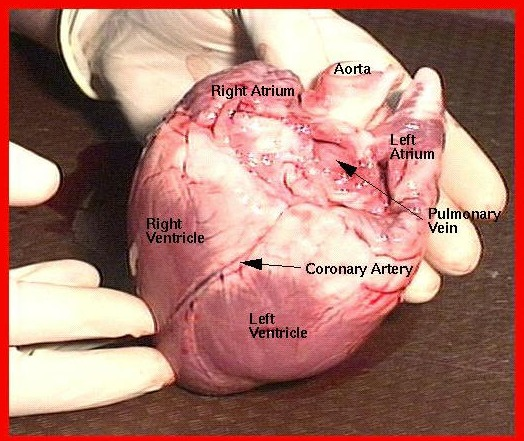
Fig 2.1 The normal heart in the fresh state, anterior view. Identify the four chambers and the coronary artery running in the interventricular groove — a vessel that will matter in §4.1, where it becomes tortuous.قلب طبیعی در حالت تازه، نمای قدامی. چهار حفره و شریان کرونر در شیار بینبطنی را بشناسید — رگی که در بخش ۴.۱ اهمیت مییابد، آنجا که پرپیچوخم میشود.
Table 2.1 Normal heart — the six wordsجدول ۲.۱ — قلب طبیعی، شش واژه
Featureویژگی
Normalطبیعی
Shapeشکل
Peach-like — a blunt cone with the apex pointing left, down and forwardهلومانند — مخروطی کُند با نوک رو به چپ، پایین و جلو
Colourرنگ
Yellow and red — yellow from the epicardial fat, red from the muscleزرد و قرمز — زرد از چربی اپیکارد، قرمز از عضله
Sizeاندازه
About the size of the subject’s own fistتقریباً به اندازهٔ مشت خود فرد
Weightوزن
Male ≈ 280 g · Female ≈ 240 gمرد حدود ۲۸۰ گرم · زن حدود ۲۴۰ گرم
Siteمحل
Left thoracic cavity, in the middle mediastinumحفرهٔ سینهای چپ، در مدیاستن میانی
Functionعملکرد
A pump — supplies blood to organs, tissues and cellsیک پمپ — خون را به اعضا، بافتها و سلولها میرساند
The three layers, outside inسه لایه، از بیرون به درون
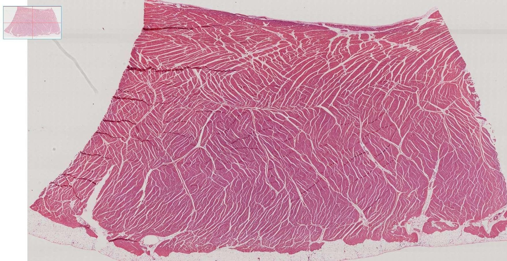
Fig 2.2 The heart wall at 4×. Before anything else, find the three layers and their order. Everything else on this slide is detail.دیوارهٔ قلب در ۴×. پیش از هر چیز، سه لایه و ترتیبشان را بیابید. باقی آنچه روی این لام است، جزئیات است.
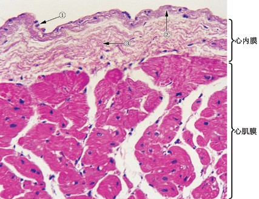
Fig 2.3Endocardium (心内膜, upper) over myocardium (心肌膜, lower). The endocardium is thin, pale and has a flat endothelial lining facing the chamber.اندوکارد (بالا) روی میوکارد (پایین). اندوکارد نازک و کمرنگ است و پوشش اندوتلیال مسطحی رو به حفرهٔ قلب دارد.
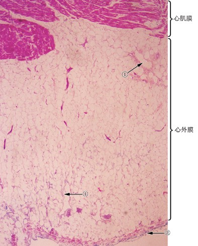
Fig 2.4Myocardium (upper) passing into epicardium (心外膜, lower) — recognisable immediately by its adipose tissue and vessels.میوکارد (بالا) که به اپیکارد (پایین) میرسد — بیدرنگ با بافت چربی و عروقش شناخته میشود.
Table 2.2 Heart wall — what to look for in each layerجدول ۲.۲ — دیوارهٔ قلب، در هر لایه دنبال چه بگردید
Layerلایه
Containsشامل
How you recognise itچگونه بشناسیدش
Endocardium — internalاندوکارد — داخلی
Endothelial layer; a subendothelial layer of smooth muscle fibres; branches of the impulse-conducting system (Purkinje fibres)لایهٔ اندوتلیال؛ لایهٔ زیراندوتلیال از رشتههای عضلهٔ صاف؛ شاخههای سیستم هدایتی (رشتههای پورکنژ)
Thin, pale band lining the chamber. Purkinje fibres are large, pale, glycogen-rich cells sitting just beneath it — bigger and emptier-looking than working myocytesنوار نازک و کمرنگ آستر حفره. رشتههای پورکنژ سلولهای بزرگ، کمرنگ و پر از گلیکوژن درست زیر آناند — درشتتر و توخالیتر از میوسیتهای کاری
Myocardium — middleمیوکارد — میانی
Striated (striped) muscle, branching, with central nuclei and intercalated discsعضلهٔ مخطط، منشعب، با هستهٔ مرکزی و صفحات بینابینی
The bulk of the wall. Fibres branch and rejoin — the feature that distinguishes cardiac from skeletal muscleحجم اصلی دیواره. رشتهها منشعب میشوند و دوباره بههم میپیوندند — ویژگیای که عضلهٔ قلبی را از اسکلتی جدا میکند
Epicardium — externalاپیکارد — خارجی
Mesothelium (simple squamous epithelium) over a thin layer of connective tissue containing arterioles, venules, capillaries, nerves and adipose tissueمزوتلیوم (اپیتلیوم سنگفرشی ساده) روی لایهٔ نازکی از بافت همبند حاوی شریانچه، وریدچه، مویرگ، عصب و بافت چربی
Fat is the giveaway — a pale, bubbly layer on the outer surface. The mesothelium itself is a single flat cell layer you may need 40× to seeچربی نشانهٔ قطعی است — لایهای کمرنگ و حبابی روی سطح بیرونی. خود مزوتلیوم یک لایهٔ سلولی مسطح است که شاید برای دیدنش به ۴۰× نیاز داشته باشید
Exam Trap — which surface is whichدام امتحانی — کدام سطح کدام است
On a slide with no chamber visible, students guess. Use the two reliable cues instead: fat means epicardium (the outside), and a flat lining cell layer with no fat means endocardium (the inside). If you see both in one field, the section runs the full thickness of the wall — say so, because it tells the reader the orientation of the block.روی لامی که حفره در آن دیده نمیشود، دانشجو حدس میزند. بهجایش از دو نشانهٔ مطمئن استفاده کنید: چربی یعنی اپیکارد (بیرون) و لایهٔ سلولی مسطح آستری بدون چربی یعنی اندوکارد (درون). اگر هر دو را در یک میدان دیدید، مقطع تمام ضخامت دیواره را در بر گرفته — همین را بنویسید، چون جهت بلوک را به خواننده میگوید.
2.2Lungریه
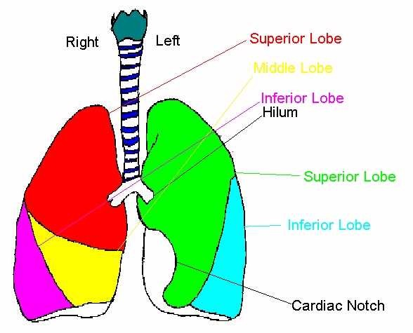
Fig 2.5 Lobes and the cardiac notch. Right: three lobes. Left: two, because the heart occupies the space where a middle lobe would be. If a specimen has three lobes it is a right lung — that is a free identification mark.لوبها و بریدگی قلبی. راست: سه لوب. چپ: دو لوب، چون قلب فضایی را اشغال کرده که لوب میانی باید آنجا باشد. اگر نمونهای سه لوب دارد، ریهٔ راست است — این یک نمرهٔ شناسایی رایگان است.
Table 2.3 Normal lung — the six wordsجدول ۲.۳ — ریهٔ طبیعی، شش واژه
Featureویژگی
Normalطبیعی
Shapeشکل
Durian-like — a half-cone, flat on the mediastinal face, domed over the diaphragmدوریانمانند — نیممخروط، مسطح در سطح مدیاستنی، گنبدی روی دیافراگم
Colourرنگ
Grey and red; grey-black stippling with age from inhaled carbon (anthracosis) is normal in a city dwellerخاکستری و قرمز؛ خالخال خاکستری–سیاه با افزایش سن از کربن استنشاقی (آنتراکوز) در شهرنشین طبیعی است
Size and weightاندازه و وزن
Various — the lecturer’s own word. Lung weight depends heavily on how much blood and oedema fluid it holdsمتغیر — به تعبیر خود مدرّس. وزن ریه بهشدت به میزان خون و مایع ادم درونش بستگی دارد
Siteمحل
Thoracic cavity, one either side of the mediastinumحفرهٔ سینه، یکی در هر طرف مدیاستن
Functionعملکرد
Gas exchange — oxygen in, carbon dioxide outتبادل گاز — ورود اکسیژن، خروج دیاکسید کربن
Textureقوام
Spongy and crepitant — it crackles under the fingers because it contains air. Loss of crepitus is a real findingاسفنجی و کریپیتانت — زیر انگشت خشخش میکند چون هوا دارد. از دست رفتن کریپیتوس یافتهٔ واقعی است
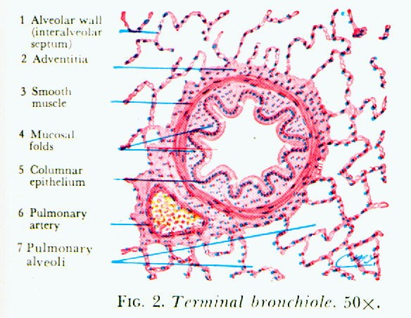
Fig 2.6Terminal bronchiole, 50×. Still a conducting tube: a complete columnar epithelium, mucosal folds and a ring of smooth muscle. No alveoli open off its wall.برونشیول انتهایی، ۵۰×. هنوز یک لولهٔ هادی است: اپیتلیوم استوانهای کامل، چینهای مخاطی و حلقهای از عضلهٔ صاف. هیچ آلوئولی به دیوارهاش باز نمیشود.
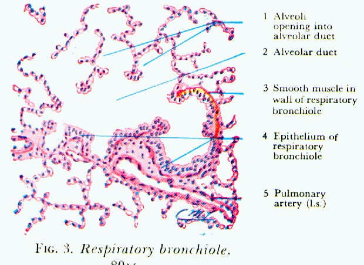
Fig 2.7Respiratory bronchiole. The wall is now interrupted by alveoli opening directly off it — the transition from conducting to respiratory airway, and the definition of the acinus.برونشیول تنفسی. دیواره اکنون با آلوئولهایی که مستقیماً به آن باز میشوند قطع شده — گذار از راه هوایی هادی به تنفسی، و تعریف آسینوس.
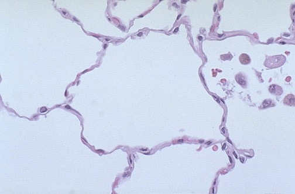
Fig 2.8 Normal alveoli. The spaces are empty, the interalveolar septa are hair-thin, and the capillaries within them are barely visible. Any thickening of these septa is abnormal.آلوئولهای طبیعی. فضاها خالیاند، سپتومهای بینآلوئولی به نازکی مو و مویرگهای درونشان بهسختی دیدنیاند. هر ضخیمشدن این سپتومها غیرطبیعی است.
High-Yield — three structures, and that is allنکتهٔ کلیدی — سه ساختار، و همین
For this session the lecturer labels exactly three things in the lung: the alveolus (the air space), the interalveolar septum (the wall between two of them) and the capillary (inside that wall). Almost every lung pathology you will meet is a change in one of the three — fluid or cells in the alveolus, thickening of the septum, congestion of the capillary. Fix the normal appearance of all three now and the rest of the course becomes comparison.برای این جلسه، مدرّس دقیقاً سه چیز را در ریه برچسب میزند: آلوئول (فضای هوایی)، سپتوم بینآلوئولی (دیوارهٔ میان دو آلوئول) و مویرگ (درون آن دیواره). تقریباً هر آسیبشناسی ریوی که خواهید دید، تغییری در یکی از این سه است — مایع یا سلول در آلوئول، ضخیمشدن سپتوم، احتقان مویرگ. ظاهر طبیعی هر سه را همین حالا تثبیت کنید و باقی دوره به مقایسه تبدیل میشود.
2.3Kidneyکلیه
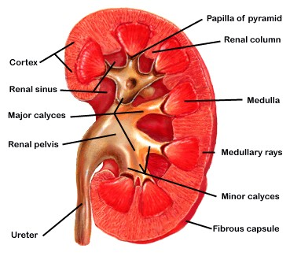
Fig 2.9 Coronal section. Learn this order outward-in: fibrous capsule → cortex → medulla (pyramids) → papilla → minor calyx → major calyx → renal pelvis → ureter. In §4.1 an obstruction below the pelvis will dilate everything above it, in exactly this sequence.برش کرونال. این ترتیب را از بیرون به درون یاد بگیرید: کپسول فیبروز ← قشر ← مدولا (هرمها) ← پاپی ← کالیس کوچک ← کالیس بزرگ ← لگنچه ← حالب. در بخش ۴.۱، انسدادی زیر لگنچه هر چه را بالاتر است، دقیقاً به همین توالی متسع میکند.
Table 2.4 Normal kidney — the six wordsجدول ۲.۴ — کلیهٔ طبیعی، شش واژه
Featureویژگی
Normalطبیعی
Shapeشکل
Like a broad bean — convex laterally, concave at the hilumشبیه باقلا — محدب در کنار، مقعر در ناف
Colourرنگ
Red — it receives about a fifth of the cardiac outputقرمز — حدود یکپنجم برونده قلبی را دریافت میکند
Sizeاندازه
10–12 × 5–6 × 3–4 cm۱۰ تا ۱۲ × ۵ تا ۶ × ۳ تا ۴ سانتیمتر
Weightوزن
125–150 g eachهر یک ۱۲۵ تا ۱۵۰ گرم
Siteمحل
Abdominal cavity — retroperitoneal, on the posterior wallحفرهٔ شکم — خلف صفاقی، روی دیوارهٔ خلفی
Functionعملکرد
Urine formation; elimination of toxinsتشکیل ادرار؛ دفع سموم
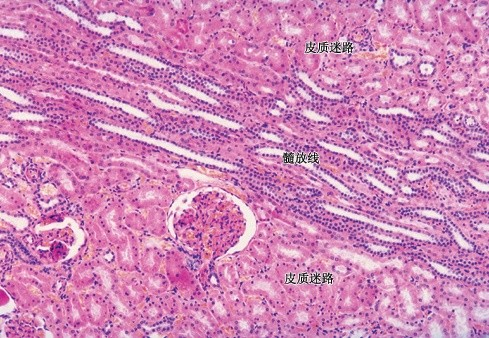
Fig 2.10 Renal cortex at low power. The cortical labyrinth (皮质迷路) carries the glomeruli; the medullary ray (髓放线) is the straight bundle of tubules running down towards the medulla — a useful landmark for orientation.قشر کلیه در بزرگنمایی پایین. هزارتوی قشری، گلومرولها را در خود دارد؛ پرتو مدولاری دستهٔ مستقیمی از توبولهاست که بهسمت مدولا پایین میرود — نشانهٔ مفیدی برای جهتیابی.
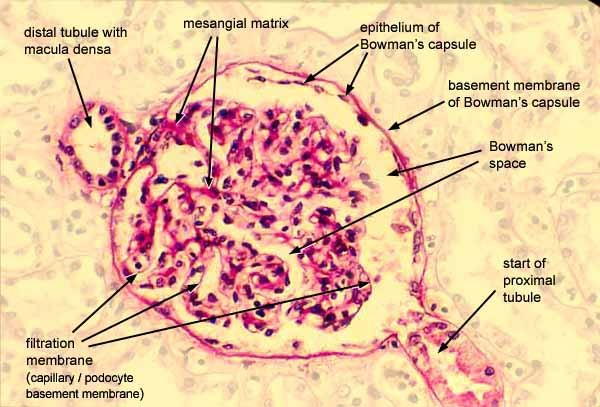
Fig 2.11 A normal glomerulus: the capillary tuft, Bowman’s space around it, the epithelium of Bowman’s capsule, mesangial matrix, and the macula densa of the distal tubule alongside.گلومرول طبیعی: کلاف مویرگی، فضای بومن پیرامون آن، اپیتلیوم کپسول بومن، ماتریکس مزانژیال، و ماکولا دنسای توبول دیستال در کنار آن.
For describing purposes the renal cortex has exactly three components, and every renal slide question is really asking which of them has changed:برای مقاصد توصیفی، قشر کلیه دقیقاً سه جزء دارد و هر پرسشی دربارهٔ لام کلیه در واقع میپرسد کدامیک تغییر کرده است:
Glomerulus — a capillary network inside Bowman’s capsule. The filter.گلومرول — شبکهای مویرگی درون کپسول بومن. صافی.
Renal tubules — the great majority of the tissue by volume. Proximal tubules have a brush border and deep pink cytoplasm; distal tubules are paler with a clearer lumen.توبولهای کلیوی — بیشترین حجم بافت. توبول پروگزیمال حاشیهٔ مسواکی و سیتوپلاسم صورتی پررنگ دارد؛ دیستال کمرنگتر با مجرای واضحتر.
Interstitium — the sparse connective tissue and capillaries between tubules. Normally you can barely see it; when you can see it, something is wrong.بینابینی — بافت همبند تُنُک و مویرگهای میان توبولها. بهطور طبیعی بهسختی دیده میشود؛ وقتی میتوانید ببینیدش، چیزی ناجور است.
2.4Normal Numbers Worth Knowingاعداد طبیعی که ارزش دانستن دارند
Table 2.5 The reference figures from this sessionجدول ۲.۵ — اعداد مرجع این جلسه
Organعضو
Normalطبیعی
Where it is used in this guideکجا در این جزوه بهکار میآید
Heart weightوزن قلب
M 280 g · F 240 gمرد ۲۸۰ · زن ۲۴۰ گرم
Both directions: below it in atrophy (§4.1), above it in hypertrophy (§4.2)هر دو جهت: پایینتر در آتروفی (۴.۱)، بالاتر در هیپرتروفی (۴.۲)
Heart sizeاندازهٔ قلب
The subject’s own fistمشت خود فرد
The bedside estimate, since a specimen rarely arrives with its owner’s handبرآورد بالینی، چون نمونه بهندرت با دست صاحبش میرسد
Kidney weightوزن کلیه
125–150 g۱۲۵ تا ۱۵۰ گرم
Compensatory hypertrophy can take one kidney well above thisهیپرتروفی جبرانی میتواند یک کلیه را بسیار بالاتر از این ببرد
Kidney sizeاندازهٔ کلیه
10–12 × 5–6 × 3–4 cm۱۰–۱۲ × ۵–۶ × ۳–۴ سانتیمتر
Note the trap in §4.1: an obstructed kidney is enlarged while its parenchyma is atrophiedبه دام بخش ۴.۱ توجه کنید: کلیهٔ دچار انسداد بزرگ است در حالیکه پارانشیمش آتروفیک است
Lung lobesلوبهای ریه
Right 3 · Left 2راست ۳ · چپ ۲
Side identification on any pulmonary specimenتعیین سمت در هر نمونهٔ ریوی
Heart wall layersلایههای دیوارهٔ قلب
Endo- → myo- → epicardiumاندو ← میو ← اپیکارد
Inside to outside. Asked directly, and needed to orient any cardiac slideاز درون به بیرون. مستقیماً پرسیده میشود و برای جهتیابی هر لام قلبی لازم است
Bench Technique — the other four organsفن آزمایشگاه — چهار عضو دیگر
The specimen list for this session also includes normal liver, spleen, stomach and intestine, both as gross specimens and as slides, but the deck does not describe them. Apply the same six words and the same three microscope steps. Two orientation cues will get you started: the spleen shows white pulp nodules scattered in red pulp at low power, and the stomach and intestine are recognised by their layered wall — mucosa, submucosa, muscularis propria, serosa — with the mucosal pattern (gastric pits versus intestinal villi) telling you which.فهرست نمونههای این جلسه شامل کبد، طحال، معده و رودهی طبیعی نیز هست، هم ماکروسکوپی و هم لام، اما اسلایدها آنها را توصیف نمیکنند. همان شش واژه و همان سه گام میکروسکوپی را بهکار ببرید. دو نشانه برای شروع: طحال در بزرگنمایی پایین ندولهای پالپ سفید پراکنده در پالپ قرمز نشان میدهد، و معده و روده با دیوارهٔ لایهلایهشان شناخته میشوند — مخاط، زیرمخاط، عضلانی و سروز — و الگوی مخاط (چالههای معدی در برابر پرزهای رودهای) میگوید کدام است.